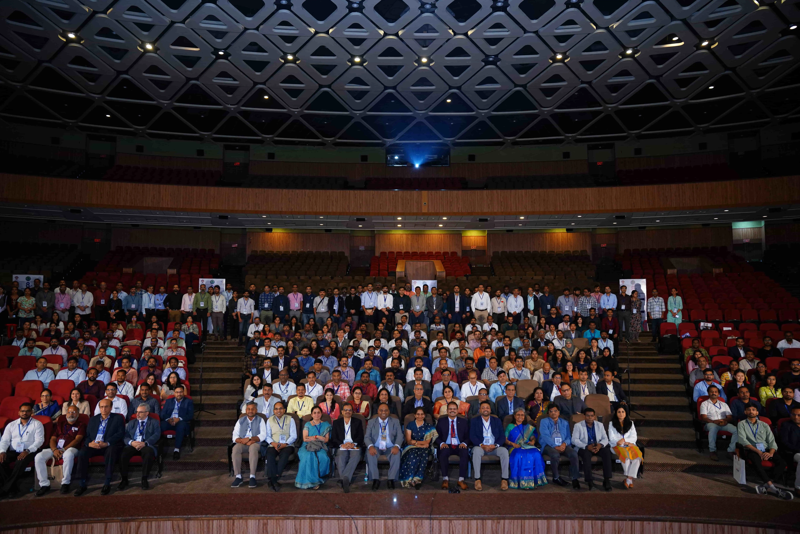
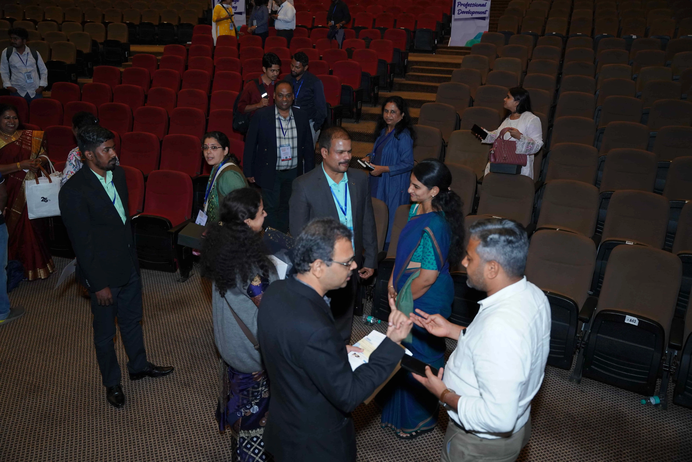
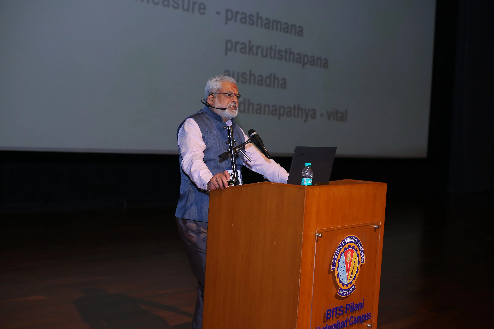

SSX 2026
Feb 20—22, 2026
Bengaluru, IN
13.029° N 77.569° E
Ramaiah University of Applied Sciences
Manifesto 001
Converging molecular precision with the future of pharmacometrics.
Join the world's leading minds in Bengaluru for a symposium dedicated to the exploration of next-generation synthesis and structural analysis. SSX 2026 bridges the gap between theoretical frameworks and clinical application.
Scroll for Index